ہائبرڈ آرکیٹیکچر: Supabase اور Spring Boot کے ساتھ دونوں دنیاؤں کا بہترین امتزاج
شائع شدہ: 14 January 2026
Wait we used English incorrectly. Should be Urdu: ".پڑھنے کا وقت : 12 minutes". Let’s output that.
</think>
Supabase کی سادگی اور Spring Boot کی طاقت کے درمیان انتخاب کرنے کی بجائے، ان دونوں کو ملانے کیوں نہیں؟ ہر ٹیکنالوجی کی بہتر سے بہتر خصوصیات کو استعمال کرتے ہوئے ایک ہائبرڈ معمارے کی دریافت کریں۔
- ٹک
-
[]
معماری کی جدید جھوٹا معضل
جب کوئی سٹاٹک فرانٹ اند کے ساتھ ایک مڈرن ایپلیکیشن بناتا ہے، تو اکثر اسے ایک بائنری انتخاب کا سامنا کرنا پڑتا ہے:
-
Backend-as-a-Service حل پر سب چیز لگائیں(Supabase, Firebase) - سادہ لیکن محدود
-
مکمل بیکینڈ بناؤ(Spring Boot, Node.js) - طاقتور لیکن پیچیدہ
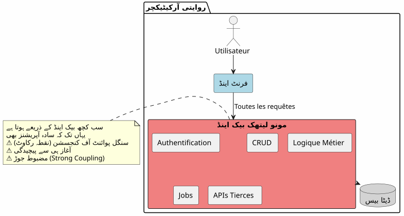
معمارى نظریہ
تقليدی معماریت : مونولیٹک
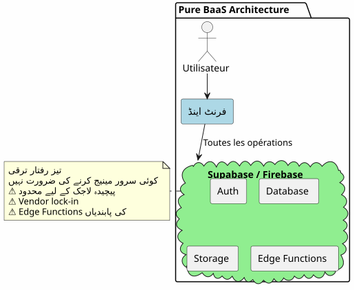
یہ رویے میں، سب سے سادہ اعمال (مکالمہ کا پڑھنا، ایک تبصرہ بنانا) آپ کے بیکینڈ سے گزرنا ضروری ہے۔ آپ پہلے دن سے ہی پیچیدگی کا خرچ ادا کرتے ہیں۔
عمارى BaaS : ہر نمائندہ
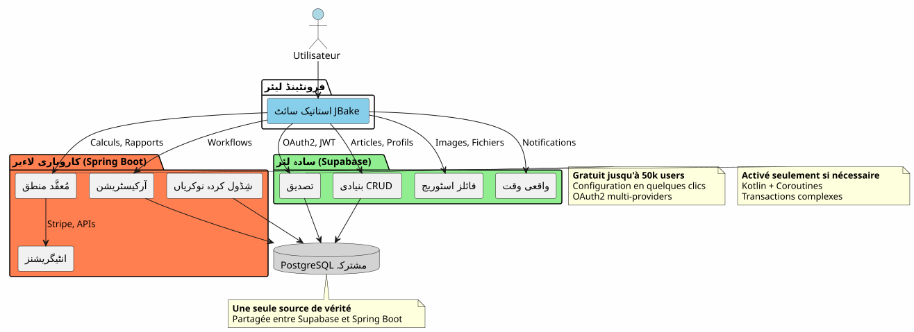
عکس، ایک BaaS میں سب چیزوں کی ڈیلیگریشن ابتدائی میں کشش لگتی ہے مگر جب کاروباری منطق پیچیدہ ہوتی ہے تو جلدی ہی اس کی حدود نظر آنا شروع ہو جاتی ہیں۔
معمارتی ہائبرڈ : responsabilites ki algthali
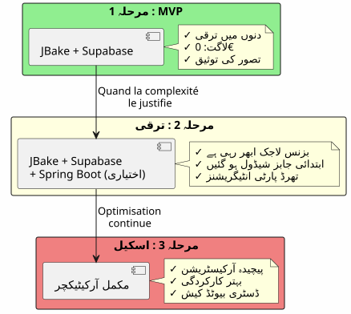
ڈیزائن کے اصول
اصول 1: سادہ سے شروع کریں، سمارٹ طریقے سے آگے بڑھیں

اگر آپ کو Spring Boot درکار نہیں ہے تو اسے نہ بنائیں۔Supabase کے ساتھ شروع کریں، جب جٹیلتہ اسے جائز ٹھہرائے تو Spring Boot شامل کریں۔
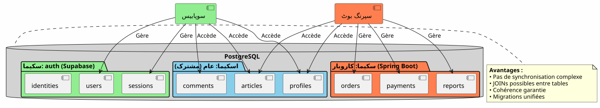
اصول 3 : ایک ہی سچائی کا منبع
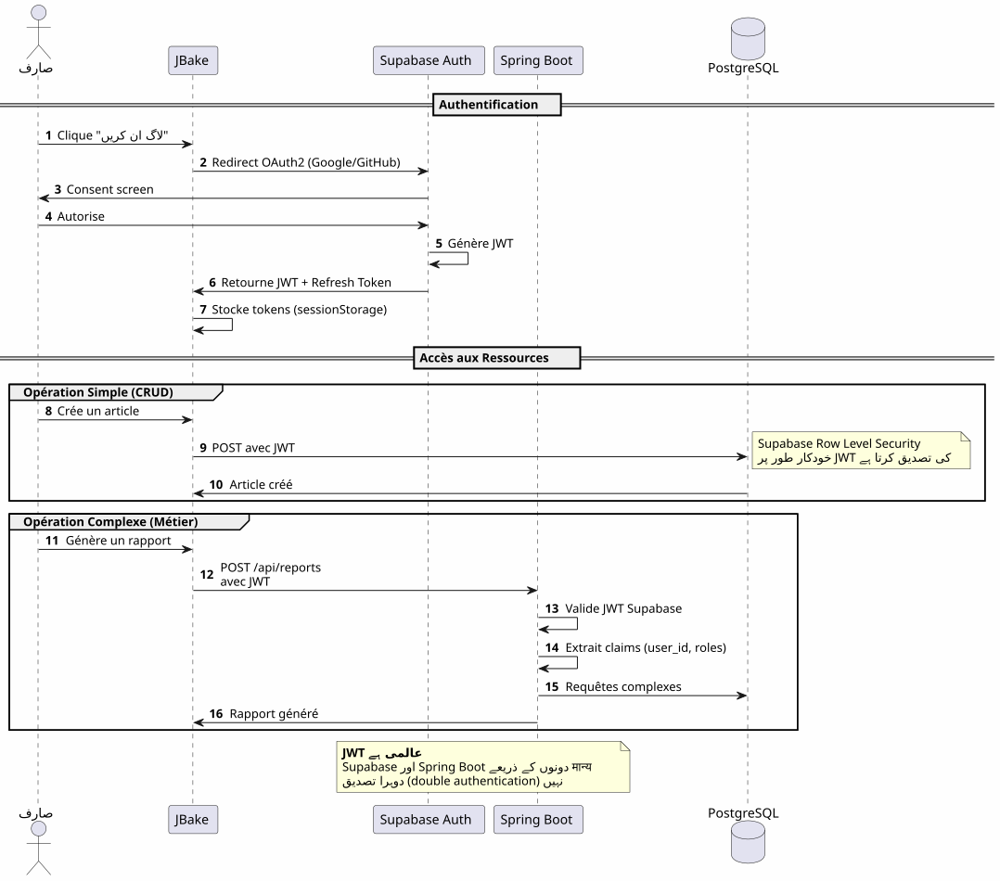
فلوؤں کی تنظیم
فلکس 1 : مرکزی تصدیق
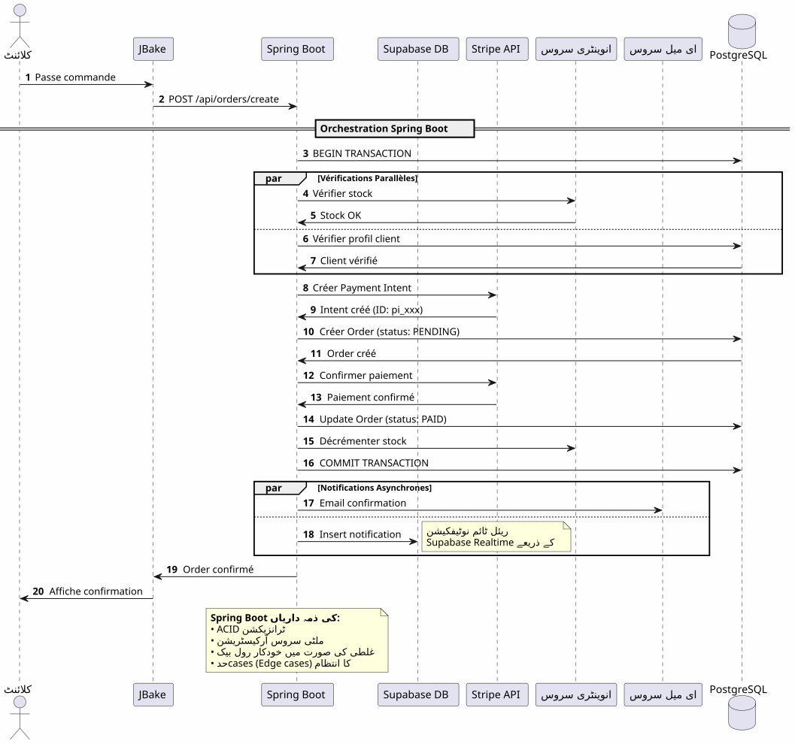
اہم نقطہصرف ایک تصدیق کرنے کا عمل، صرف ایک JWT، ہر جگہ استعمال کے قابل۔
فلکس 2 : ایک پیچیدہ کاروباری عمل کی اورکیستریشن
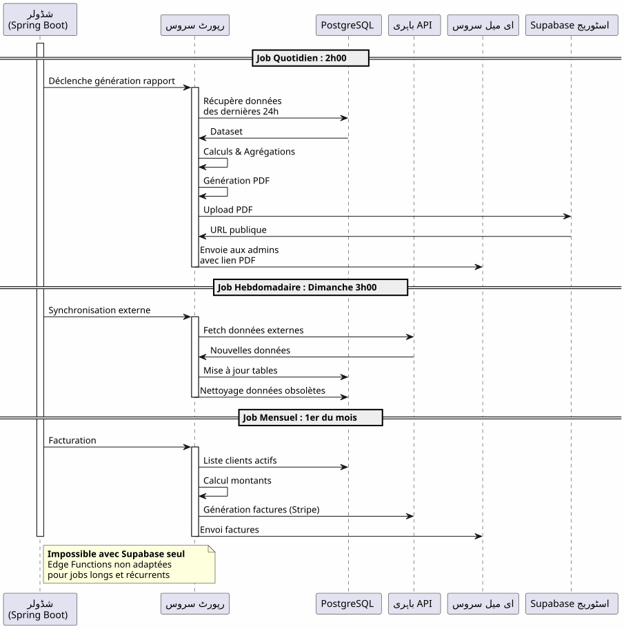
سپرنگ بوٹ کیا لاتا ہےقابل اعتماد اورکستریشن پیچیدہ عملوں کی جس میں متعدد نظامات شامل ہیں اور ٹرانزیکشنل گارنٹی کے ساتھ۔
فلکس 3: تختیب شدہ کام اور ہم آہنگی

فیصلہ سازی کی ماترکس

Spring Boot کو استعمال کب کرنا چاہیے؟
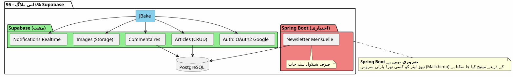
پروجیکٹ کی قسم کے مطابق معماری کے نمونہ
بلاگ / پورٹ فورلو
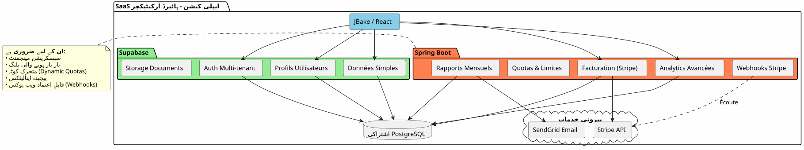
فیصلہ: 100% Supabase بہت کافی ہے.
SaaS ایپلیکیشن
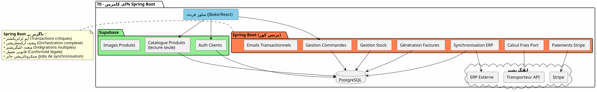
فیصلہلازمی ہائبرڈ معماری۔ Supabase بنیادی امور کے لیے، Spring Boot اہم حصے (ادائیگی، بلنگ) کے لیے۔
ای-کامرس
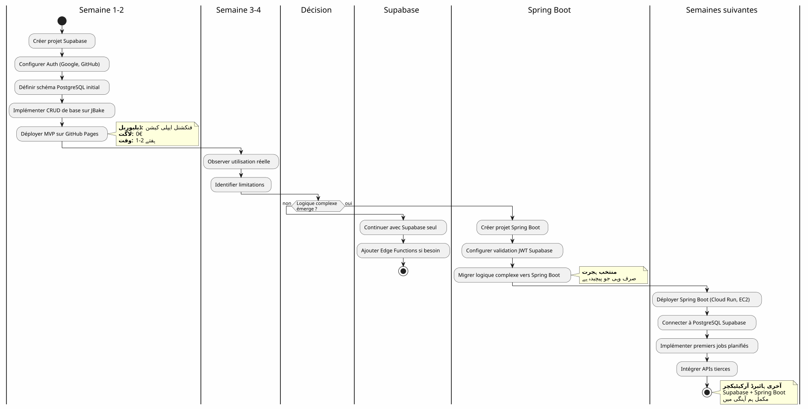
فیصلہSpring Boot ضروری ہے۔ Supabase صرف احراز هویت اور catalogue کے لیے۔
پروگرسیو مایگریشن کی حکمت عملی
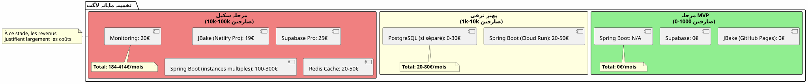
خرجی اور ملاحظات عملاتی
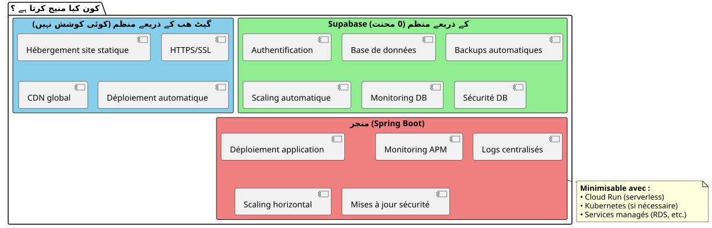
آperiشنل ذمے داری

Supabase + Spring Boot کی ہائبرڈ معماریت ایک تساهل نہیں، یہ ایکتآزر.
یاد رکھنے والے اصول
اس معماریت کو کس وقت منتخب کرنا چاہیے؟
✅ یہ معماریت اس کے لیے مثالی ہے اگر :
-
آپ جلد سے شروع کرنا چاہتے ہیں (MVP کے لیے دنوں میں، ماهیں نہیں)
-
آپ کاروبار کی پیچیدگی میں اضافے کی امید رکھتے ہیں۔
-
آپ ابتدائی لاگت کو کم کرنا چاہتے ہیں
-
آپ PostgreSQL کو محبت کرتے ہیں اور سچائی کا ایکلا مصدر چاہتے ہیں
-
آپ کو Kotlin اور Coroutines پسند ہیںكاروباري کوڈ کے لیے
-
آپ مکمل وینڈر لاک-این سے بچنا چاہتے ہیں
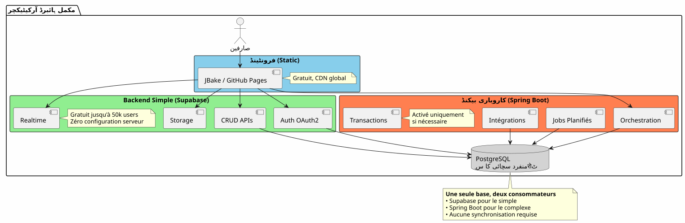
-
آپ کا پروجیکٹ سادہ ہے اور یہ اسی طرح رہے گا (شخصی بلاگ → 100% Supabase کافی ہے)
-
آپ کے پاس پہلے سے قائم بیکن ایڈ اسٹک ہے جسے آپ maîtrisez
-
آپ ایک روایتی مونو لیٹھ پسند کرتے ہیں
-
آپ کو .NET، Python یا کوئی بھی بیکینڈ زبان درکار ہے
آخری مجموعی نظر
دونوں جہانوں کا سب سے بہتر
یہ معماری آپ کو دیتا ہے :
🚀 Supabase ki raftār
-
گھنٹوں میں شروع، ہفتوں میں نہیں
-
OAuth2 توثیق کچ کلکس میں
-
خودکارانہ طور پر پیدا کردہ REST APIs
-
صفر-کونفیگریشن سرور
💪 Spring Boot کی طاقت
-
Kotlin اور Coroutines کے لیے غیر ہم آہنگ کوڈ عصری
-
پیچیدہ کاروباری عملوں کی اورکیسٹریشن
-
کام شڈول کردہ موثوق
-
ضمان شدہ ACID تراکنشات
-
کامل سپرنگ ایکوسیسٹم
💰 ترقیاتی’économie
-
0€ کے لیے شروع کرنے اور تصدیق کرنے کے لئے
-
لگتیں jo trqee ke saath barhti hain
-
قبلвременہ زيادہ انجينئرنگ نہیں
🎯 معماری لچک
-
تدريجي ميگرشن بدون بازنویسی
-
Spring Boot صرف ضرورت ہونے پر شامل کریں
-
کوئی مکمل ویینڈر لاک-ان نہیں
-
ترقی پذیر معماری
もっと遠くへ
تکنیکی وسائل
Supabase دستاویزات :
اسپرنگ بوٹ دستاویزات :
مزید مضامین :
-
JWT کے ساتھ APIS کی سیکیورٹی
-
PostgreSQL کی کارکردگی بہتر سازی
-
پروگرسیو میگریشن کے نمونے
-
وزعتِ معماری میں غلطیوں کا انتظام
حقیقی استعمال کے مثالات
یہ ہائبرڈ معماری کامیابیت سے استعمال کی جاتی ہے :
-
SaaS B2B: Supabase توثیق، Spring Boot بِلنگ
-
بازاروں: کٹیلاگ Supabase، معاملات Spring Boot
-
محتوا پلیٹ فارمز: مقالات Supabase, تحليلات Spring Boot
-
اندرونی ٹولز: CRUD Supabase, workflows Spring Boot
شروع کرنے کی چیک لسٹ
مرحلہ 1 - بنیادیں (ہفتہ 1)
-
ساپربیس اکاؤنٹ بنائیں - [ ] پوسٹگری سیکوئل پروجيکٹ کنفیگر کریں - [ ] Auth فعال کریں (Google, GitHub) - [ ] ابتدائی اسکیما تعریف کرنا - [ ] رو لیول سکیورٹی کانفیگر کریں - [ ] JBake سے APIs ٹیسٹ کریں
مرحلہ 2 - MVP (ہفتہ 2-3)
-
اصلی صفحات لاپلیمنٹ کریں - [ ] OAuth2 تصدیق کو شامل کریں - [ ] CRUD فورمز بنائیں - [ ] فائلوں کے لیے سٹوریج کو کنفیگر کریں - [ ] گٹ ہب پیج پر ڈپلائیں - [ ] حقیقی احوال میں ٹیسٹ
مرحلہ 3 - ترقی (ضرورت کے مطابق)
-
م پیچیدگی لوجیک کے ضروریات - [ ] ضرورت پڑنے پر Spring Boot بروجیکٹ بنائیں - [ ] Supabase کے JWT تصدیق کو سیٹ اپ کریں - [ ] PostgreSQL Supabase سے منسلک کریں - [ ] مائگریٹ پیچیدہ خصوصیات - [ ] لاگو کریں مفروضہ jobs - [ ] Spring Boot ڈپل کریں (Cloud Run, وغیرہ)
انٹی پيٹرنز سے بچنا
❌ نہ کریں :
-
Supabase اور Spring Boot کے درمیان ڈیٹا کو دوبل کریں
-
دو جداگانه PostgreSQL بنائیں
-
احرازِ هویت کو خود کوڈ کریں
-
سادی CRUD کے لیے Spring Boot استعمال کریں
-
شروع سے اضافی ڈیزائن کرنا
-
Supabase کی Row Level Security کو نادیده کریں
✅ بلکہ کریں:
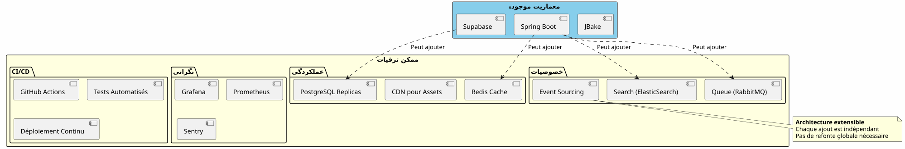
ترقی کے امکانات
نیے صلاحیتیں شامل
افقی سکیلنگ
جب آپ کی ایپلیکیشن بڑھتی ہے، ہائبرڈ آركيٹکچر خود بخود سکیل ہوتی ہے :
Supabase :
-
خودکار طور پر ملائنوں عمل تک سکیل
-
Read replicas کے لیے کارکردگی پڑھنا
-
نقطہ-و-وقت کی ریکاوری سکیورٹی کے لیے
سپرنگ بوٹ :
-
لوڈ بالینسر کے پیچھے متعدد انستنس
-
ستیتلس ڈیزائن ہریزنٹل اسکیلنگ کو آسان بناتا ہے
-
کبرنیٹس، orchestration کے لئے ضرورت پڑنے پر
PostgreSQL :
-
بڑے ٹیبلز کے لیے پارٹیشننگ
-
کانکشن پولنگ (PgBouncer)
-
شاردنگ اگر واقعاً ضروری ہے (نادر)
معماری شاہدات
SaaS اسٹارٹاپ (50k کاربران)
_ ہم نے 100% Supabase سے شروع کیا۔ 5k استعمال کرنے والے پر، ہم نے صرف Stripe بلوگنگ اور ماہانہ رپورٹس کے لیے Spring Boot شامل کیا۔ ایک سال بعد، ہماری 80% آپریشنز ابھی بھی Supabase سے گزر رہی ہیں۔ Spring Boot صرف اہم حصے کو منیج کرتا ہے۔ یہ جدائی نے ہمیں دوبارہ بنائے بغیر بڑھنے کی اجازت دی۔ _
ای-لرنینگ پلےٹ فارم (10k صارفین)
Marketplace B2B (3k صارفین)
_ Spring Boot خریداری کنندگان اور فروشندگان کے درمیان ترanzactions کو منظم کرتا ہے (اہم). Supabase سب کچھ سے نپٹا ہے: پروفائل، ریل‑ٹائم میسेजنگ، دستاویزات۔ وہ یہ کہ وہ ایک ہی PostgreSQL ڈیٹابیس شیئر کر رہے ہیں سے ہمیں پیچیدہ synchronization سے بچتی ہے۔ یہ ہمارا سب سے بہتر معماری انتخاب ہے جو ہم نے کیا ہے۔ _
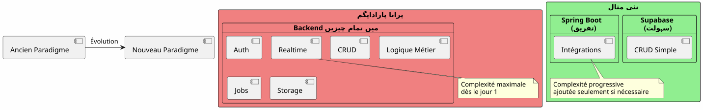
Supabase + Spring Boot کی ہائبرڈ آرکیٹچر ایک نئی مثال کی نمائندگی کرتی ہے:معماری کی تخصص.
بنیادی اصل :پہلے سے موجود سروس بنائیں نہیں۔ اپنی ایپلیکیشن کو مختلف کرنے والی چیز پر توجہ مرکّز کریں۔
80/20 کا قاعدہ
زیادہ تر ایپلیکیشنز میں:
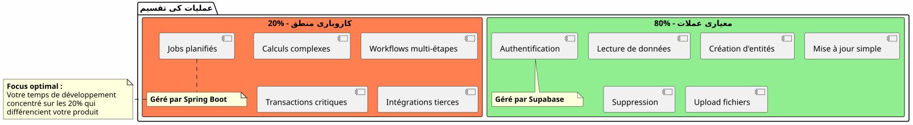
یہ فطری قانون ہائبرڈ معماری کی توجہی کرتا ہے۔
نتیجہ اختتامی
ہائبرڈ معمار ایک تکنیکی سمرझؤتا نہیں، یہ ایکاستراتژیک فیصلہ.
یہ آپ کو اجازت دیتا ہے :
-
✅ جلدی سے ایک فعال MVP کے ساتھ شروع کریں
-
✅ بہت زیادہ سرمایہ کار کے بغیراپنے مارکیٹ کی تصدیق کریں
-
درجہ دار طور پر ترقی کرنا جب تعقید کی ضرورت ہو
-
ہر مرحلے پر اپنی لاگتوں کو کنٹرول کرنا
-
✅ ہر ٹیکنالوجی کا بہترین استعمال کرنا
-
✅ پیش از وقت اضافی انجینیرنگ سے بچیں
-
✅ مستقبل کے لیے انعطاف برقرار رکھیں
یہ نمائندہ ہے :
-
🎯عاملیتہر ٹیکنالوجی جہاں وہ اچھی ہوتی ہے
-
🚀رفتار: وقت-بازار کم
-
💰معیشتقیمت کے ساتھ مطابقت رکھنے والے اخراجات
-
🔮قابل توسیع: آرکیکچر جو آپ کے ساتھ بڑھتی ہے
-
🛡️ضبَط: منظور شدہ اور قابل اعتماد خدمات
آپ کا اگلا قدم
اگر یہ معماریت آپ سے بات کرتی ہے، تو یہاں سے شروع کریں :
-
ایک Supabase اکاؤنٹ بنائیں(مفت)
-
**اپنا کم سے کم ڈیٹا اسکیما définissez? Wait we need to not include French. So final: "اپنا کم سے کم ڈیٹا اسکیما تعریف کریں". Ensure no extra punctuation not present. Original had no period. So output without period.
</think>
اپنا کم سے کم ڈیٹا اسکیما تعریف کریں**
آپ کے پاس ایک کام کرنے والا MVP ہوگا میںچند دن.